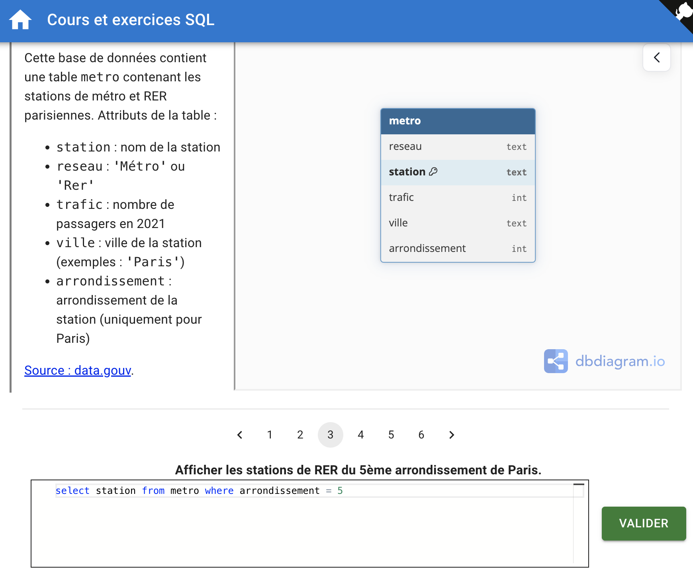
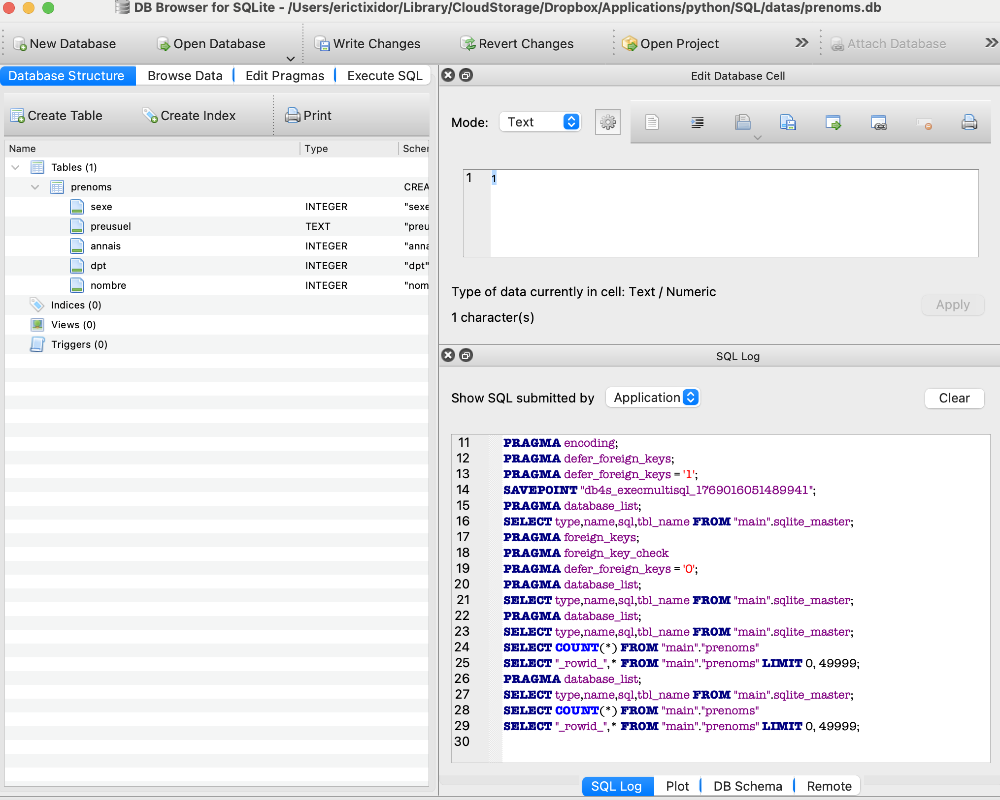
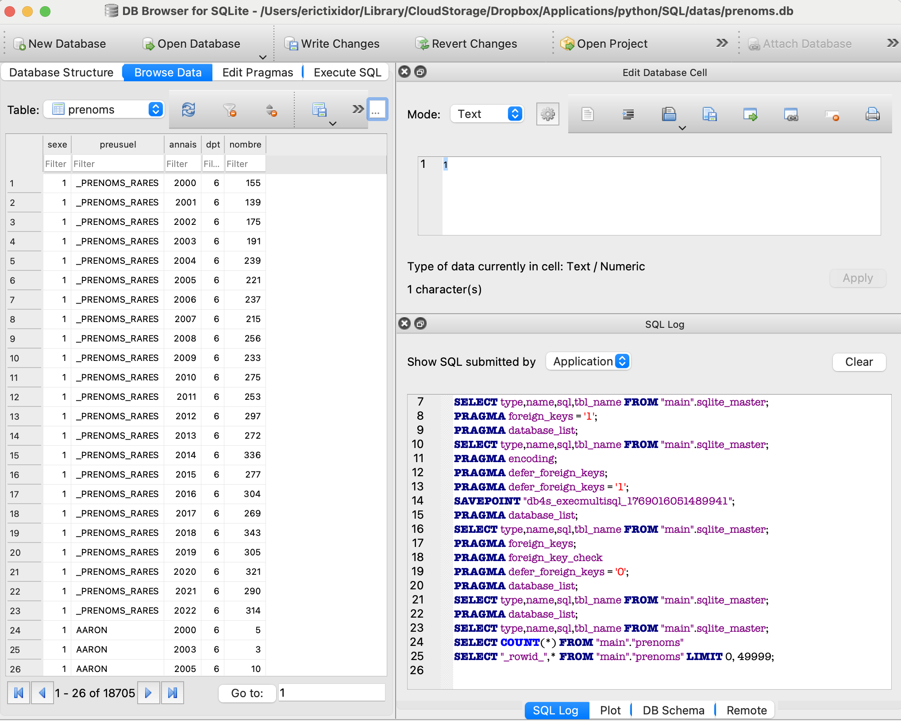
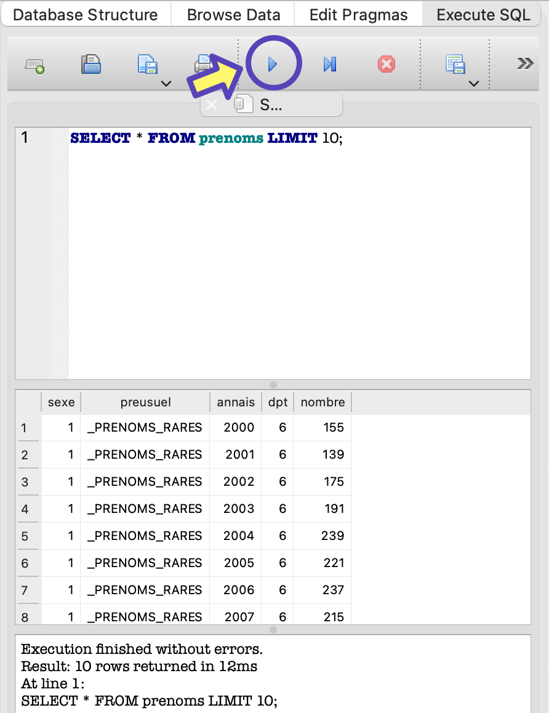

TP prenoms sql
TP1 sur la base des stations de métro
Se rendre à la page de Quentin Fortier, professeur en classes preparatoires https://sql-exercices.github.io/ et choisir (à gauche), l’exercice sur le métro parisien. Celui-ci propose de travailler sur une base de données à une seule table.
La page se présente comme ceci.

credit: fortierq Quentin Fortier
Pour chacune des questions, placer vos requêtes en bas de la page, et vérifier avec le bouton VALIDER.
TP2 sur la table des prenoms
Télécharger la table en format csv
Le site de l’insee propose une page avec les fichiers des prenoms de l’état civil: Lien
Un
fichier d’extension .sql a été généré à partir de ces données. Téléchargez le
ici.
Ouverture du fichier: Deux options possibles
Local: DB Browser for Sqlite
-
Lancez votre gestionnaire de base de données (DB Browser for Sqlite). Si besoin, une version portable se trouve ici
-
Dans le menu: Import: Database from SQL file…
-
Ouvrir le fichier qui se trouve dans vos Documents.
-
Le logiciel vous demande alors quel sera le nom de la base de données. Choisir: prenoms.
En ligne: sqliteonline.com
gestionnaire en ligne sqliteonline.com
Affichage de la table
Pour la suite, les instructions seront données pour le logiciel en local: DB Browser for Sqlite.
Dans la partie supérieure gauche, observez 4 onglets qui permettent de choisir entre:
- Database Structure
- Browse Data
- Edit Pragmas
- Execute SQL
Choisir Database structure: nom de la table et des différents attributs

présentation des différentes tables et attributs
Choisir Browse Data: observer le contenu e la table

parcourir les valeurs de la table
Choisir Execute SQL
La fenêtre permet alors de placer une requete en langage SQLite. Le résultat dans une autre fenêtre, juste au dessous.
Afficher les premières lignes de la table afin de prendre connaissance des étiquettes des colonnes:
Executer avec le bouton d’execution.

Travail
Ecrire et tester une à une les instructions qui permettent de:
- Afficher les dix premières lignes de la table
- Afficher les lignes correspondant à l’année 2000. Là encore, mieux vaut ne demander que les 10 premières lignes…
- Afficher les prénoms des garçons nés en 2000 (limiter à 50).
- Combien de fois le prénom Nicolas a-t-il été donné en 2000 ?
- Afficher les 10 prénoms de fille les plus donnés en 2000 rangés dans l’ordre décroissant du nombre de fois où ils ont été donnés. Utiliser les mots-clés:
SELECT FROM WHERE ORDER BY DESC LIMIT - Afficher les lignes des prénoms de garçons donnés entre 2000 et 2020 (inclus l’un et l’autre). Utiliser un AND pour tester l’encadrement des années.
- Afficher le nombre de prénoms différents de garçons donnés depuis 2000.
SELECT COUNT(*) FROM WHERE - Afficher le nombre de naissances de garçons observées en 2020.
- Afficher le nombre de filles et le nombre de garçons apparaissant dans la table.
SELECT SUM(nombre) FROM GROUP BY - Quel est le prénom, pour un certain sexe, en distinguant par exemple “Camille (fille)” et “Camille (garçon)”, qui a été le plus donné durant une année donnée ? En quelle année ?
SELECT FROM ORDER BY DESC LIMIT - En quelle année y-a-t-il eu le plus de naissances ? SELECT SUM(nombre) FROM GROUP BY ORDER BY DESC LIMIT
- Quels sont les 10 prénoms les plus donnés en France au cours du XXI-ème siècle en cours?
SELECT SUM(nombre) FROM GROUP BY ORDER BY DESC LIMIT
Autres travaux pratiques SQL
Table unique
Exercice sur les nouilles japonaises. Interface en ligne par N. Revéret sur forge.apps.education.fr
Pays, villes et langues parlées, plusieurs tables
Exercice sur le langage SQL rédigés par N. Revéret sur forge.apps.education.fr. Interface en ligne.
Liens
- memento SQL sur forge.apps.education.fr
- l’exercice sur les prenoms est inspiré du site forge.apps.education.fr
- autres themes sur forge.apps.education.fr (disquaire)